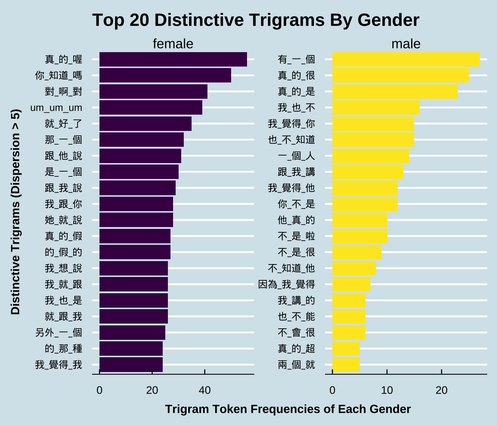
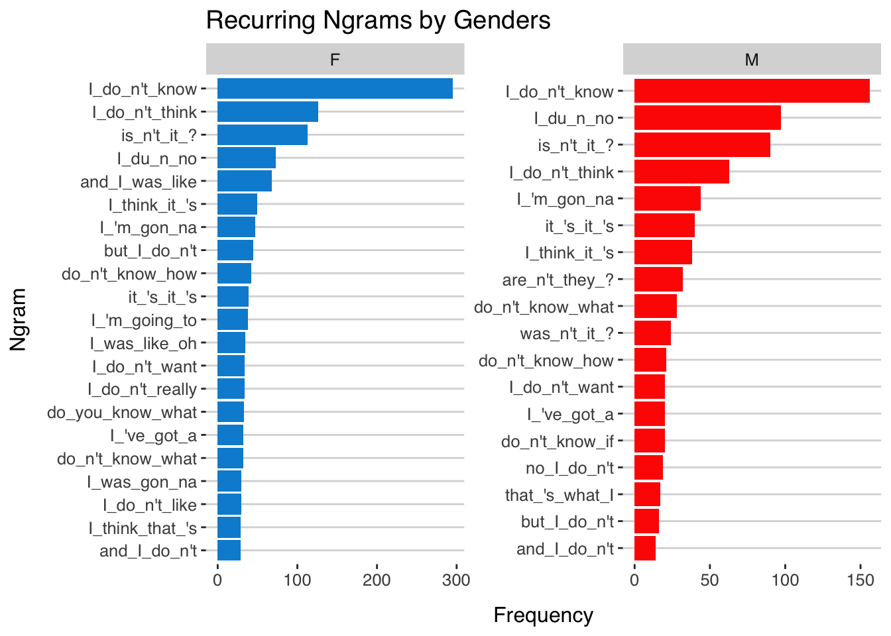
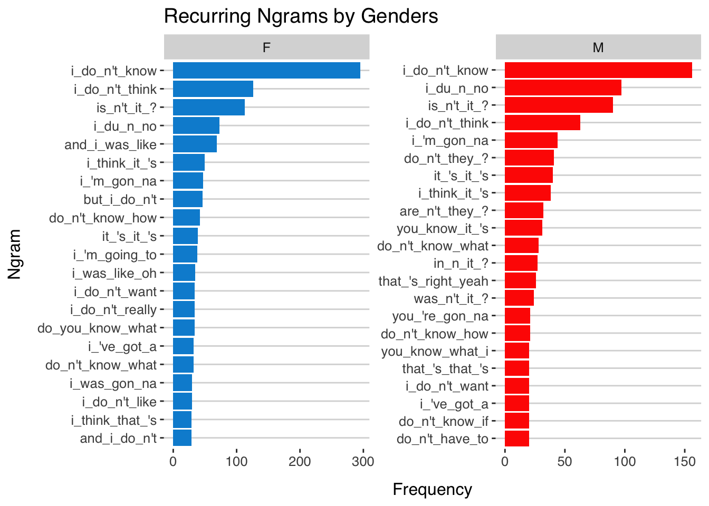

Chapter 4 Corpus Analysis: A Start
In this chapter, I will demonstrate how to do basic corpus analysis after you have collected data. I will show you some of the most common ways that people work with the text data.
4.1 Installing quanteda
To start with, this tutorial will use a powerful package, quanteda, for managing and analyzing textual data in R. You may refer to the official documentation of the package for more detail.
quanteda is not included in the default R installation. Please install the package if you haven’t done so.
Also, as noted on the quanteda documentation, because this library compiles some C++ and Fortran source code, you will need to have installed the appropriate compilers.
- If you are using a Windows platform, this means you will need also to install the Rtools software available from CRAN.
- If you are using macOS, you should install the macOS tools.
If you run into any installation errors, please go to the official documentation page for additional assistance.
4.2 Building a corpus from character vector
To demonstrate a typical corpus analytic example with texts, I will be using a pre-loaded corpus that comes with the quanteda package, data_corpus_inaugural. This is a corpus of US presidential inaugural address texts, and metadata for the corpus from 1789 to present.
We create a corpus() object with the pre-loaded character vector data_corpus_inaugural:
After the corpus is created, we can use summary() to get the metadata of each text in the corpus, including word types and tokens as well. This allows us to have a quick look at the size of the addressess made by all presidents.
require(ggplot2)
corp_us %>%
summary %>%
ggplot(aes(x = Year, y = Tokens, group = 1)) +
geom_line() +
geom_point() +
theme_bw()
4.3 Keyword-in-Context (KWIC)
Keyword-in-Context (KWIC), or Concordances, is the most frequently used method in corpus linguistics. The idea is very intuitive: we get to know more about the semantics of a word by examing how it is being used in a wider context.
We can use kwic() to perform a search for a word and retrieve its concordances from the corpus:
kwic() returns a data frame, which can be easily output to a CSV file for later use.
4.4 KWIC with Regular Expressions
For more complex searches, we can use regular expressions as well in kwic(). For example, if you want to include terror and all its other related word forms, such as terrorist, terrorism, terrors, you can do a regular expression search.
By default, the kwic() is word-based. If you like to look up a multiword combination, use phrase():
It should be noted that the output of kwic includes not only the concordances (i.e., preceding/subsequent co-texts + the keyword), but also the sources of the texts for each concordance line. This would be extremely convenient if you need to refer back to the original discourse context of the concordance line.
4.5 Tidy Text Format of the Corpus
Using tidy data principles is a powerful way to make handling data easier and more effective, and this is no less true when it comes to dealing with text. As described by Hadley Wickham (Wickham 2014), tidy data has a specific structure:
Each variable is a column Each observation is a row Each type of observational unit is a table We thus define the tidy text format as being a table with one-token-per-row. A token is a meaningful unit of text, such as a word, that we are interested in using for analysis, and tokenization is the process of splitting text into tokens. This one-token-per-row structure is in contrast to the ways text is often stored in current analyses, perhaps as strings or in a document-term matrix. For tidy text mining, the token that is stored in each row is most often a single word, but can also be an n-gram, sentence, or paragraph. In the tidytext package, we provide functionality to tokenize by commonly used units of text like these and convert to a one-term-per-row format.
Tidy data sets allow manipulation with a standard set of “tidy” tools, including popular packages such as dplyr (Wickham and Francois 2016), tidyr (Wickham 2016), ggplot2 (Wickham 2009), and broom (Robinson 2017). By keeping the input and output in tidy tables, users can transition fluidly between these packages. We’ve found these tidy tools extend naturally to many text analyses and explorations.
At the same time, the tidytext package doesn’t expect a user to keep text data in a tidy form at all times during an analysis. The package includes functions to tidy() objects (see the broom package [Robinson et al cited above]) from popular text mining R packages such as tm (Feinerer, Hornik, and Meyer 2008) and quanteda (Benoit and Nulty 2016). This allows, for example, a workflow where importing, filtering, and processing is done using dplyr and other tidy tools, after which the data is converted into a document-term matrix for machine learning applications. The models can then be re-converted into a tidy form for interpretation and visualization with ggplot2.
4.6 Frequency Lists
To get a frequency list of words, word tokenization is an important step for corpus analysis because words are a meaningful linguistic unit in language. Also, word frequency lists are often indicative of many important messages.
Now we can count the word frequencies:
Frequency lists can be generated for bigrams or any other multiword combinations as well:
corp_us_bigrams <- corp_us_tidy %>%
unnest_tokens(bigram, text, token = "ngrams", n = 2)
corp_us_bigramsTo create bigram frequency list:
## [1] 135562## [1] 1355044.7 Collocations
corp_us_collocations <- corp_us_bigrams_freq %>%
filter(n > 5) %>% # set bigram frequency cut-off
tidyr::separate(bigram, c("w1", "w2")) %>%
mutate(w1freq = corp_us_words_freq$n[match(w1, corp_us_words_freq$word)],
w2freq = corp_us_words_freq$n[match(w2, corp_us_words_freq$word)]) %>%
mutate(w12freq_exp = (w1freq*w2freq)/sum(n)) %>%
mutate(MI = log2(n/w12freq_exp),
t = (n - w12freq_exp)/sqrt(n)) %>%
arrange(desc(MI))
corp_us_collocationst-score.

4.8 Word Cloud
library(wordcloud)
set.seed(123)
with(corp_us_words_freq, wordcloud(word, n,
max.words = 100,
min.freq = 10,
scale = c(5,1),
color = brewer.pal(8, "Dark2")))
tidytext, there is a preloaded data frame, stop_words, which contains common English stop words. Please make use of this data frame and try to re-create a word cloud with all stopwords removed.